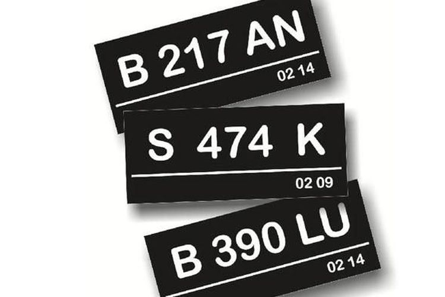

Ini waktu penetapan NOPOL warna baru
GHULAM MUHAMMAD NAYAZRI
KabarKabur.com - 27/09/2017, 15:23 WIB

Saat ini pelat nomor untuk kendaraan penumpang pribadi warna dasarnya hitam.(istimewa)
KabarKabur.com - Penetapan warna pelat nomor baru, ternyata tidak diimplementasikan tahun ini. Kepala Korps Lalu Lintas (Korlantas Polri) Irjen Pol Royke Lumowa, mengatakan, aturan baru itu akan dilaksanakan secara bertahap pada 2019.
Prosesnya disebut-sebut perlu melakukan perubahan terhadap regulasi terlebih dahulu, sebagai dasar hukum. Saat ini aturan mengenai warna pelat nomor, tercantum di dalam Peraturan Kapolri Nomor 5 Tahun 2012.
“Iya regulasinya perlu diubah terlebih dahulu. Sementara tagetnya bisa diimplementasi bertahap tahun 2019,” ujar Royke Lumowa, Rabu (27/9/2017).
Royke menambahkan, kalau teknis pelaksanaannya untuk tahap awal akan diberlakukan bagi kendaraan baru. Kemudian juga ditujukan bagi mobil atau sepeda motor yang habis masa berlaku Surat Tanda Nomor Kendaraan (STNK) lima tahunan.
Seperti yang disebutkan oleh Chryshnanda, Brigjen Pol Chryshnanda Dwilaksana, Direktur Keamanan dan Keselamatan (Dirkamsel) Korlantas Polri mengatakan, kalau ini salah satu bentuk dukungan dalam pengaplikasian kamera CCTV (Closed Circuit Television) yang rencananya akan dipasang untuk mengawasi perilaku berlalu lintas.
penulis :Ghulam Muhammad Nayazri
Editor :Agung Kurniawan